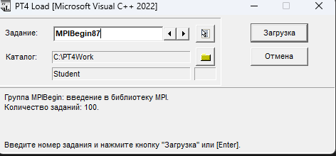
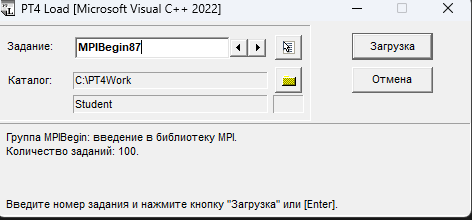

1. Скачивание
Перейдите на официальный сайт для скачивания MPI-библиотеки. Вы можете воспользоваться следующей ссылкой:
Перейти на сайтНа сайте выберите версию, совместимую с вашей операционной системой.

2. Установка
После скачивания установите 3 основных файла:
- Основной инсталлятор MPI.
- Дополнительные утилиты.
- Библиотеки для разработки.
Во время установки следуйте стандартным шагам мастера установки.
3. Запуск
После установки выполните запуск MPI и настройте его следующим образом:
- Откройте установленную программу.
- Выберите конфигурационный файл для запуска.
- Убедитесь, что путь к библиотекам указан корректно.
 
